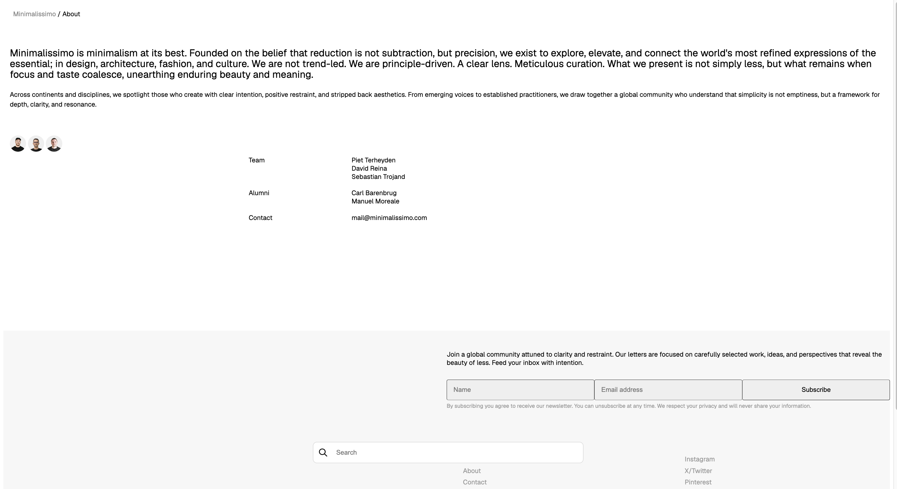

Welcome to my homepage!
Hi, nice to meet you!!
My name is Fernanda Akazawa and I'm a student learning Frontend Web Development. Besides that, I already worked as a Math teacher, Statistic Consultant and Backend Developer.
Yes, I've tried a lot of things, because I'm searching a career that I really love. I think I'm on my way 😁. I like to play my Nintendo Switch, travelling around the world and I'm member of Soka Gakkai International Buddhism.
Welcome to my world and enjoy it!!
What about take a look at my projects?
My Last Projects

My skills
Softwares, databases and tools
Frontend
JavaScript
HTML and CSS
Backend
Docker
Kubernetes
AWS Services
Azure Pipelines
Grafana
Dynatrace
Kiali
Kibana
Programming Language
Python
Go
Databases
MySQL
Redis
Postgres
Tools and Workflow
Git
GitHub
VS Code
SAP Technologies
SAP HANA
SAP S4/HANA
SAP BTP Kyma
SAP Analytics Cloud
SAP Fiori
Languages
English
Portuguese
Spanish
My Career History
Professional
Development Specialist
Sao Leopoldo - RS, Brazil
2023 - 2025
Analytics Consultant Associate
Sao Leopoldo - RS, Brazil
2023 - 2025
Education
Big Data, Data Science and Data Analytics Specialization
Sao Leopoldo - RS, Brazil
2020 - 2021
Bachelor in Statistics
Sao Carlos - SP, Brazil
2012 - 2017
Say hello to me!
You can reach me out through Linkedin or e-mail.